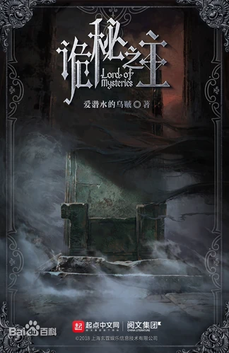

Lord of Mysteries is a western fantasy (xuanhuan) web novel written by the Chinese author Cuttlefish That Loves Diving and published on QiDian. The web novel was officially translated by CKTalon and published on Webnovel.
In the waves of steam and machinery, who could achieve extraordinary? In the fogs of history and darkness, who was whispering? I woke up from the realm of mysteries and opened my eyes to the world.
Firearms, cannons, battleships, airships, and difference machines. Potions, divination, curses, hanged-man, and sealed artifacts… The lights shone brightly, yet the secrets of the world were never far away. This was a legend of the “Fool”.